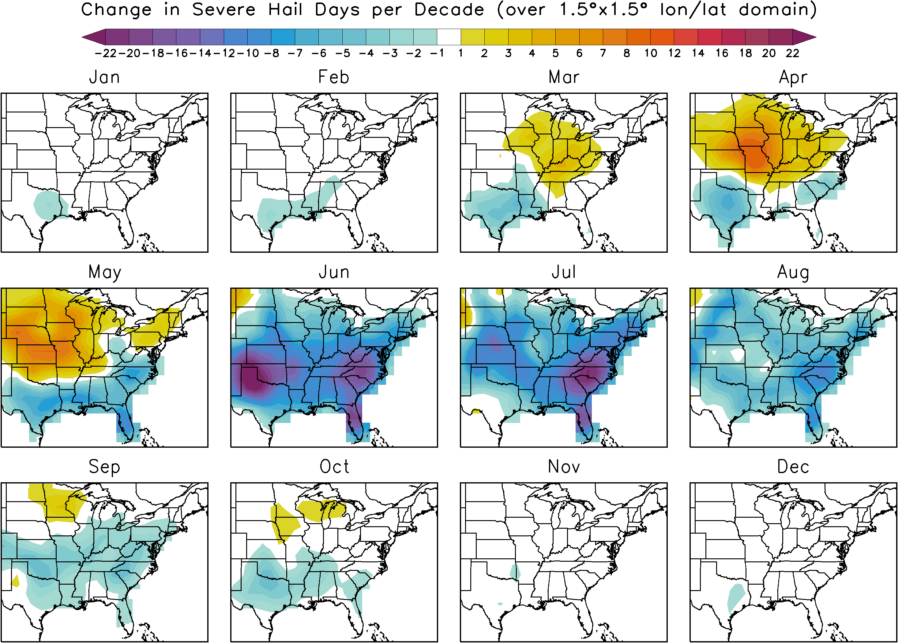

Statistically Downscaled Hail Projections
Introduction
Welcome to our site for statistically downscaled climate change projections of severe hail. Climate models cannot resolve the processes that generate hail. Nevertheless, they can resolve the types of large-scale atmospheric conditions that lead to the storms that generate hail. For these projections, we first find an empirical statistical relationship between the large-scale atmospheric state and the occurrence of hail using observations from 1990 to 2012. We then apply this relationship to climate models in order to predict the probability of hail given the large-scale atmospheric state from the climate models. This kind of exercise is called statistical downscaling.
The change in the number of days per decade with severe hail are shown below for each month (change from 1961-2000 to 2081-2100). The total number of days per decade irrespective of month is simply the sum of the 12 monthly figures. Severe hail is defined as hail greater than 0.75 inches. The hail statistics are given in terms of the occurence or probability of hail in a 1.5ºx1.5º longitude/latitude box. More information about the data and methodology and the future projections are available.
Home